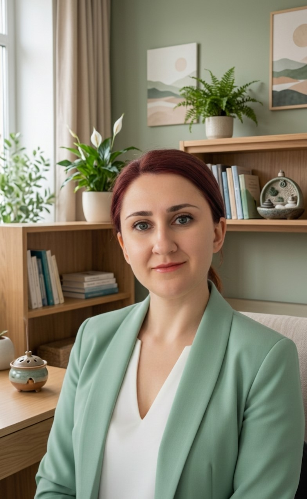

Коя съм аз и как мога да Ви помогна?
Здравейте, аз съм Теодора Маринова и вярвам, че всеки заслужава да живее в хармония със себе си и с другите. Като психолог, моята мисия е да Ви подкрепям в търсенето на по-добро разбиране на Вашите мисли, чувства и поведения, за да можете да се справите с предизвикателствата и да постигнете желаната промяна.
Моята работа е изградена върху принципите на индивидуалния подход и уважението към Вашия личен път. Вярвам, че Вие сте най-добрият експерт по собствения си живот, а аз съм тук, за да Ви предоставя инструментите и подкрепата, от които се нуждаете, за да разкриете пълния си потенциал.
Моята експертиза и квалификации
Образование
Специализации
- Фасилитатор по семейни системни констелации: Преминах двугодишен курс към Фондация "Фамилни констелации - България".
- Гещалт-консултант: Преминах двугодишен курс за гещалт-консултант към "Български Институт по Гещалт Терапия". Към момента продължавам обучението си като психотерапевт под супервизия.
Какво е Гещалт?
Гещалт терапията е вид психотерапия, която се фокусира върху осъзнаването и преживяването в настоящия момент (тук и сега).
Думата "Гещалт" (Gestalt) е немска и означава цялост, форма или модел. Основната идея е, че човек трябва да бъде разглеждан като едно цяло – тяло, ум и емоции. Когато имаме нерешени конфликти или незавършени преживявания от миналото, те пречат на нашата цялост и се проявяват като проблеми в настоящето.
Целта на Гещалт терапията е да Ви помогне да осъзнаете как се чувствате, мислите и действате в момента, за да можете да поемете отговорност за изборите си и да затворите "незавършените гещалти" (стари проблеми, които ви дърпат назад).
Това е един активен и творчески процес, в който вместо да говорим само за миналото, ние го преживяваме в безопасността на терапевтичната среда, за да намерим нови, по-здравословни начини за справяне и да възстановим своята цялост.
С какво мога да Ви бъда полезна?
Тревожност и стрес
Постоянно чувство на безпокойство, паник атаки или трудности със справянето със стреса.
Бърнаут
Чувство на изтощение, липса на мотивация и претоварване, свързани с работата.
Взаимоотношения
Конфликти, трудности в общуването или усещане за неразбиране в партньорските отношения, семейството, на работното място или с родителите и приятелите.
Раздяла и развод
Емоционалната болка и трудностите, свързани с прекратяването на една връзка.
Проблеми със самочувствието
Подобряване на самооценката и изграждане на по-уверена представа за себе си чрез постигане на усещане за цялост, любов към и приемане на себе си.
Взаимоотношения с деца
Предизвикателства в комуникацията и разбирателството с децата.
Статии
В тази секция скоро ще намерите авторски статии по теми, свързани с моята практика.
Как да започнем?
За да си запазите час или да обсъдим как мога да Ви бъда полезна, свържете се с мен:
+359 883 397 126
teodora.k.marinova@gmail.com
Или си запишете час в SuperDoc
гр. София, ж.к. "Красно село"
Първата консултация е възможност да се запознаем, да обсъдим Вашите нужди и да решим дали сме подходящи един за друг."
